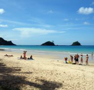

The Beach
- 


stretching from Solta to Mljet, and this unique cycling trip captures the highlights with an ideal balance of activity, culture and relaxation. Experience the beautiful island of Korcula with its picturesque old town, the untouched beauty of Vis, and trendy Hvar with its Venetian architecture. In the company of a cycling guide, this stimulating journey explores towns and landscapes, many of which are on UNESCO's world heritage list. Aboard the comfortably appointed wooden motor yacht, there is ample time between cycles to swim in the azure waters and soak up the ambience of seaside towns.